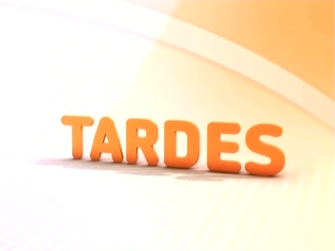

Séries e seriados
- 
Drama, investigação, ficção científica, aventura, comédia... tudo isso pode estar em uma série, com história de elementos contínuos, ou em um seriado, com histórias fechadas por episódio. No Viva, diversos programas do gênero foram exibidos, com predominância dos de enfoque cômico.
O primeiro programa do Viva foi uma série! Mulher, às 20h30 de 18/05/2010, abriu as transmissões do canal, sendo exibido de segunda a sexta, às 20h15, até agosto. Em outubro, foi para os domingos à noite, espaço que passou a abrigar mais programas do gênero ao longo de 2011.
As séries de comédia estrearam, marjoritariamente, para auxiliar na composição da faixa de humor, diversificada a partir de outubro de 2010. No começo, esse bloco era só à noite... depois, ganhou até rodada vespertina! Muita coisa transitou por esses 2 turnos e fez a alegria do telespectador do Viva.
Em 2013, foi a vez da reprise mais antiga do Viva no ramo de séries e seriados acontecer: Malu Mulher, um clássico da televisão brasileira, registrou uma breve, mas inesquecível passagem pelo canal.
Em breve, nesta página: Faça Sua História; Sob Nova Direção; Casos e Acasos; Dicas de um Sedutor; A Justiceira; Armação Ilimitada; Minha Nada Mole Vida; Carga Pesada; Tarcísio & Glória; Toma Lá, Dá Cá; Delegacia de Mulheres; Malu Mulher; Ó Paí, Ó; Antônia; Cidade dos Homens; Retrato de Mulher; A Diarista.